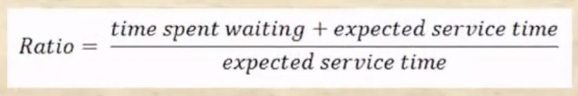

충남대학교 컴퓨터공학과 류재철 교수님의 "운영체제 및 실습" 강의를 필기한 내용입니다.
강의를 듣고 필기한 내용이기에, 다소 잘못된 부분과 구어적 표현 이 포함되어 있을 수 있습니다.
Short, mid, long - term Schedule

- 일단 Ready Queue에 있다가 Dispatch가 되어서 CPU를 할당받는 작업이나 Timeout이 걸려 Ready Queue로 내려가는 것, IO등의 이벤트로 인해 Block되는 작업 은 가장 빈번하게 일어나기 때문에 이것에 관련된 정책을 Short-term Schedule 이라고 한다
- 그리고 메모리에 자리가 없어서 Ready상태에 있던 놈이 swap-out되는 Ready, Suspend나 Block된 놈이 Swap-out되는 Blocked, Suspend의 경우에는 적당히 일어나기 때문에 이것에 관련된 정책을 Mid-term Schedule라고 한다
- 또한 프로세스가 folk되어 new state에 있다가 자원을 모두 할당받으면 Ready state가 되는데 너무 많은 프로세스가 Ready queue에 있으면 시스템에 부담이 되기 때문에 new state에서 자원을 할당받는거를 기다리게 되는데 이러한 과정은 잘 일어나지 않기 때문에 이것에 관련된 정책을 Long-term Schedule이라고 한다

- 따라서 new, exit과 관련된 작업은 Long-term Schedule, suspend와 관련된 작업은 Mid-term Schedule, Running, Ready, Blocked랑 관련된 작업은 Short-term Schedule이라고 할 수 있다
- Mid-term Scheduling과 Long-term Scheduling은 메인메모리에 올라가는 프로세스의 갯수와 연관된다는 점에서 Multiprogramming Level을 조절해주는 역할을 하게 된다
Short-term Scheduling
- Dispatcher, Short-term Scheduling, CPU-time Scheduling 다 비슷한 말이다
- 자주 일어나기 때문에 이 과정이 빠르게 일어날 수 있도록 알고리즘을 짜야되고
- 빠른것 뿐만 아니라 모든 프로세스에게 공평하게 자원이 돌아갈 수 있도록 알고리즘을을 짜야 된다
Criteria
- Short-term Scheduling의 알고리즘을 선택하는 기준(Criteria)
- Turnaround Time : 어떤 프로세스가 생성되고(new) 종료(exit)될때까지 걸린 시간
- 프로세스가 생성된 후에는 여러번의 wait과 running을 거치기 때문에 Trunaround Time은 총 Service Time(Running Time)과 총 Waiting Time의 합이다
- 일단 프로세스가 생성된 후에 일을 마치고 종료되는 시간이 짧으면 좋기 때문에 Turnaround Time이 짧으면 좋은데
- 프로세서가 같다면 저 프로세스가 실행되는데 걸리는 시간은 동일하기 때문에 Service Time은 동일하다
- 따라서 Waiting Time을 줄이는 것이 관건이며 이것들의 평균인 Average Waiting Time 혹은 Service Time까지 합쳐서 Average Turnaround Time이 낮은 Scheduling Algorithm을 선택하는 것이 효율적이다
- Response Time : 얘는 프로세스의 실행 후 첫번째로 결과물이 나오는(뭐 printf로 뭔가가 출력되게 한다던지)데까지 걸리는 시간을 의미한다
- 얘도 당연히 적을수록 좋지만 결과물을 출력하는 지점을 어디에 설정하느냐에 따라 값이 달라지기 떄문에 CPU Scheduling Algorithm을 선택하는 데에는 별로 중요한 척도가 되지 못한다
- 하지만 사용자 편의성의 관점에서 보자면 매우 중요 - 일례로 여러 클라이언트가 접속하는 서버의 경우에는 첫번째로 받게되는 결과물이 완성된 html파일이기 때문에 이 response time이 이러한 경우에는 아주 중요한 척도가 된다
- Deadlines : 얘는 이제 반드시 이 시간 내로는 프로새스가 완전히 실행되어 종료되어야 한다라는 뜻을 가지고 있다 - 특히 아주 중요한 실시간 프로그램의 경우
- Throughput : 얘는 단위시간 내에 몇개의 프로세스가 종료되는지이다 - service time이 얼마나 걸리는지와 scheduling algorithm에 따라 많이 달라지더라 - 얘도 당연히 많이 끝내면 좋은거이기 때문에 클수록 좋은거다
- Processor Utilization : CPU 이용률을 의미 - CPU를 많이 이용할수록 더 좋다
- 알고리즘측면에서는 높으면 높을수록 좋기는 하지만 실제로는 100퍼센트까지 올라가면 시스템이 다운될수도 있기 때문에 대략 50-60퍼센트정도로 유지시킨다
- Enforcing Priority : 프로세스들에게 우선순위를 주어서 우선순위가 높은 프로세스를 먼저 CPU에게 할당하는 알고리즘
Priority Queuing

- 커널 프로세스같은 중요한 프로세스는 fixed priority를 가질수도 있지만 유저 프로세스 대부분은 우선순위가 바뀌는 dynamic priority를 가지게 된다
- CPU time(timeout과 관련된 시간이 아니고 지금까지 총 할당받은 시간)이 많은 놈은 우선순위를 좀 낮추고 총 waiting time이 많은놈의 경우에는 우선순위를 높여서 빈부격차를 줄인다
- 저 RQ가 프로세스 우선순위에 따른 큐 이고 상위계층의 큐가 다 비어야 그 다음의 큐에 들어있던 프로세스가 실행되게 된다
- Pre-emptive라는 것은 낮은 우선순위를 가진프로세스가 실행되다가 높은 우선순위의 프로세스가 들어오면 낮은 우선순위의 프로세스를 중단시키고 높은 우선순위의 프로세스로 문맥을 교체시키는 것을 의미하고 Non Pre-emptive라는 것은 데드락에서 배운거처럼 반대로 높은 우선순위의 프로세스가 들어와도 현재 프로세스를 중단시키지 않는 것을 의미한다
Selection Function(Algorithm)
- w는 waiting time을 뜻하는 기호
- e는 execution time을 뜻하는 기호
- s는 service time 을 뜻하는 기호
- 여기서 e과 s의 차이는 s는 프로세스가 종료되기까지 필요로 하는 CPU time 총 시간을 의미하고 e는 지금까지 얼마만큼의 CPU time을 할당받았냐를 의미
- 따라서 e = s가 될때 프로세스가 종료되게 된다
- Turnaround time은 w + s가 되는 것
Algorithm

- 위처럼 프로세스 5개의 도착시간(Arrival Time)과 종료되기까지 필요로 하는 시간(Service Time)이 있다고 할 때
- First Come First Served(FCFS) 알고리즘

- 얘는 무적권 먼저 도착한놈한테 먼저 CPU 를 할당해주는 것을 의미

- 이때의 Turnaround time은 위와 같다
- 이 표를 읽는 방법은 우선
- Finish time은 말 그래도 끝난 시간을 의미하고
- Turnaround time은 Finish time에서 Arrival time을 뺀 시작에서부터 종료되기까지 걸린 시간
- 그리고 Tr / Ts 는 Turnaround time / Service time 이다 - 즉, 총 걸린 시간을 실제 작동한 시간으로 나눈 것을 의미
- Tr / Ts 가 1이라는 것은 waiting time이 하나도 없었다는 것을 의미하고 1보다 크다는 것은 waiting time이 존재했다는 뜻으로도 생각할 수 있음
- 그리고 이 값이 클수록 waiting time의 비율이 높은거이기도 하다
- 위의 그래프를 Gantt chart라고 하고 저런 표들이나 이 차트를 주고 w, s, 등등을 구하는 문제 나온댄다
- FCFS의 경우에는 프로세스가 종료되기 전까지 CPU를 뺏지 않으므로 No Pre-emptive라고 할 수 있다
- 하지만 만약 제수없게 실행시간이 엄청 긴 프로세스가 먼저 오면 w가 엄청 커지게 되는 단점이 있는데 이것을Convoy effect라고 한다
- Round Robin(RR)

- 얘는 q 단위시간마다 프로세스를 교체시키는 알고리즘이다
- time quantum(q) 는 얼마의 단위시간마다 프로세스를 교체할건지를 의미한다
- 위의 차트는 q = 1인 상황으로 1 단위시간마다 프로세스가 교체되는 것을 알 수 있으며
- 처음에 A프로세스의 경우에는 1 단위시간을 실행하고 난 다음에도 아무 프로세스도 들어오지 않았기 때문에 1단위시간을 더 실행하게 되는 것
- 그리고 할당된 시간이 끝나고 누구에게 넘겨줄 것인가를 결정하는 것을 Tie Break Rule이라고 하는데 위의 그래프에서는 FCFS방식으로 넘겨줬기 때문에 먼저 들어온놈에게 프로세스가 넘어가는 것
- 하지만 Tie Break Rule을 execution time이 적은놈이라고 정하면 또 차트가 달라질 수도 있다
- Round Robin의 경우에는 q를 너무 짧게 잡으면 context switch가 자주 일어나기 때문에 별로 좋지 않다 - 어쨋든 context switch가 일어난다는 것도 추가적인 시간을 잡아먹는 일이기 때문
- 이렇듯 q를 너무 짧게 잡으면 context switch가 너무 자주 일어나게 되고 너무 길게 잡으면 FCFS와 다를바가 없기 때문에 보통 q 시간 내에 80퍼센트의 프로세스들이 종료될 수 있도록 q값을 설정해준다
- Round Robin은 같은시간동안 순서대로 프로세스들에게 CPU를 할당해주기 때문에 interactive program에서 자주 쓰인다
- Round Robin의 경우에는 정해진 시간이 지나면 CPU를 뻇으므로 Pre-emptive라고 할 수 있다
- Shortest Process Next(SPN)

- 얘는 프로세스가 종료되고 난 후에 가장 Service time이 적은 프로세스로 옮겨가는 알고리즘이다
- 얘도 프로세스가 종료되기 전까지는 CPU를 뺏지 않으므로 Non Pre-emptive라고 할 수 있다
- 이 알고리즘은 waiting time의 평균이 다른 알고리즘들보다 작다 - 프로세스가 필요로 하는 총 Service time을 알기 어렵다는 점에서 현실적으로는 구현하기 힘들고 어떤 알고리즘의 효율을 비교하는데 사용하는 이론적인 알고리즘이다
- 즉, 어떤 알고리즘이 있을 때 waiting time이 SPN에 근접하면 좋은 알고리즘인거고 너무 차이가 많이 나면 안좋은 알고리즘인 셈
- Shortest Remaining Time(SRT)

- 얘는 SPN의 Pre-emptive 버전 이다
- 작동방식은 새로운 프로세스가 들어왔을 때 지금 실행하고있는것의 남은시간(Remaining time)과 새로 들어온놈의 Service time을 비교해 짧은놈이 실행되게 하는 것
- 위의 예시로 보자면 일단 2시에 B가 들어왔는데 A는 1시간만 있으면 종료되므로 그대로 A를 실행한거고
- 그다음 B를 실행하다가 4시에 C가 들어왔는데 B는 종료되려면 5시간이 남았고 C는 4시간이면 종료되기 때문에 C로 프로세스를 교체한 것을 알 수 있다
- 얘는 SPN보다도 더 waiting time이 짧으나 SPN과 마찬가지로 service time과 remaining time을 알 수 없기 때문에 이론적으로만 존재하는 알고리즘이다
- 따라서 마찬가지로 어떤 알고리즘의 효율성을 비교할때 사용되는 기준점을 제시해주는 역할을 함
- Highest Response Ratio Next(HRRN) : 얘는 다음과 같은 수치를 이용해 다음 실행될 프로세스를 결정한다

- 여기서 일단 aging이라는 용어가 나온다 - 오래 기다려서 folk된지 오래된 프로세스를 나이가 드는것에 빗대어 waiting time이 긴 프로세스일수록 age가 많다고 판단 - 이런 프로세스에게 우선권이 넘어가도록 한다
- 그래서 위 수식을 보면 일단 waiting time이 길수록 저 ratio가 커지게 되고
- 그리고 service time적을수록 ratio가 커지게 되어 - SPN과 SRT를 생각해보면 service time이 적은 프로세스를 먼저 실행시키는 것이 waiting time을 줄이는 방법이므로
- 종합적으로 ratio가 크다는 말은 waiting time이 크거나 service time이 작다는 말이므로 ratio가 큰 프로세스를 선택하는 것
- 하지만 이 역시도 service time을 알아야 하기 때문에 구현하기에는 어려움이 많은 알고리즘이다
- Feedback Scheduling : 얘는 이제 waiting time을 줄이려면 service time을 알아야 가능하다는 생각에서부터 출발한 알고리즘이다

- 일단 이 알고리즘은 우선순위에 따라 여러개의 큐가 존재하는데
- 예를 들어서 n이 2까지 있어서 3단계로 우선순위를 나눈다고 해보자
- 이때 첫번째 큐(RQ0)의 경우 RR로 작동하고 q를 1로 두고
- 두번째 큐(RQ1)도 RR로 작동하는 대신 q를 2로 두고
- 세번째 큐(RQ2)는 FCFS로 작동한다고 해보자
- 이때 프로세스가 생성되면 전부 RQ0로 집어넣은 다음
- 프로세스를 실행시켜 RQ0에서 1 단위시간 내에 끝나면 그냥 끝나는거지만
- 만약에 1 단위시간 내에 안끝내면 RQ1으로 내려보내고 RQ0이 비기 전까지는 RQ1을 실행하지 않게 된다
- 그리고 RQ0이 비게 되면 그제서야 RQ1를 실행하게 되는데
- RQ1에서 2 단위시간 내로 프로세스가 종료되면 그냥 끝나는거지만 만약에 2 단위시간 내로 끝나지 않으면 이제 RQ2로 내려보내고
- 마찬가지로 RQ1이 비기 전까지는 RQ2를 실행시키지 않는다
- RQ1까지 비게 되면 이제 RQ2를 실행시키는데 얘는 FCFS이기 때문에 들어온 순서대로 프로세스가 종료될때까지 실행되게 된다
- 대신 새로운 프로세스가 실행되어 RQ0으로 들어오면 지금 하던일을 멈추고 RQ0으로 가서 실행시킴 - 따라서 Pre-emptive 하게 작동한다고 할 수 있다
- 이런식으로 우선순위마다 큐를 여러개 두고 각 큐마다 다른 알고리즘을 적용시키되 각 큐들의 Quantum Time을 다르게 두어서 먼저 끝나는 프로세스를 먼저 실행시킬 수 있게 하는 것이다
- service time을 실행시키는 당시에는 알 수 없기 때문에 시간제한을 두고 일단 실행시켜서 시간제한 내에 종료되면 service time이 짧은 놈을 먼저 실행시킨 꼴이므로 waiting time을 줄이는 효과를 가져오고
- 그리고 제한시간 내에서 끝내지 못했으면 일단 service time이 제일 적은놈은 아니라는 것이 증명되므로 우선순위를 낮춰 나중에 실행되게 하는 꼴이고
- 마지막 우선순위에 도달할때까지 종료되지 못했으면 service time이 아주 오래걸린다는 소리이므로 제일 나중에 FCFS같은 Non-preemptive한 알고리즘으로 실행시켜 나머지 과정을 마무리 짓는것
- 즉, 시간제한을 여러개를 두어서 service time을 직접 실행시키면서 추론하는 방식으로 service time이 짧은 프로세스를 먼저 실행시키는 효과를 내어 waiting time을 줄이고하 하는 알고리즘이 Feedback Scheduling이다 - 상위 우선순위에서 끝마치지 못해 하위 우선순위로 내리는 것을 Feedback이라고 한다
- 이 알고리즘이 요즘의 많은 OS에서 채택하고 있는 Scheduling 방식이다
- Fair Share Scheduling(FSS) : 이게 현재 UNIX시스템에서 채택하고있는 Scheduling 방식이다

- 일단 위의 수식을 이해할 필요가 있다
- 일단
CPUj(I)는 현재의 CPU time을 나타낸다 - 그럼CPUj(I - 1)은 바로 이전의 CPU time을 나타내것제 - 그리고 Base랑 nice는 일단은 그냥 상수값으로 생각해래이
- 그럼 위의 수식에 따라 현재의 CPU time은 이전의 CPU time의 절반이 되고
- 그걸 또 Priority(위의 수식에서는
Pj(I))를 계산할때는 현재의 CPU time에서 절반을 나누므로 결과적으로는 이전의 CPU time에서 4를 나눈 값으로 계산하게 된다 - 그리고 다음의 예시를 이해해보면

- 일단 먼저 프로세스 A, B, C가 동일한 시간에 들어왔다고 해보자
- 그리고 여기에서 Base랑 nice의 합은 60이라고 가정해보자
- 일단 셋이 같이 들어왔고 CPU time도 0이므로 Priority는 60이 되어 셋 다 동일한 상태이다
- 어차피 차이가 없으므로 A를 먼저 선택했을 경우
- 보면 1 단위시간동안 CPU time동안 CPU time이 60씩 증가하게 된다 - 따라서 프로세스 A가 실행되는 0 ~ 1의 시간에는 CPU time이 60이 된다
- 근데 다음 1 ~ 2의 기간에는 A의 경우 이전의 CPU time이 60이었으므로 4로 나눠 15가 되기 때문에 이것을 Base와 nice에 더해 Priority가 75가 된다 - 그리고 현재의 CPU time의 경우에는 절반을 나누기 때문에 1 ~ 2에서의 CPU time은 30이 되는 것
- 그럼 A는 75이고 B와 C는 60이기 때문에 B와 C중 하나를 고르게 된다 - 여기서는 P가 낮을수록 우선순위가 높은거임
- 만약 B를 선택했다면 0 ~ 1에서의 A와 마찬가지로 2 ~ 3에서의 B의 Priority는 75가 된다
- 근데 A의 경우에는 이전의 CPU time이 30이었기 때문에 이것을 4로 나눠 계산한 Priority는 67.5로 재조정되고 현재의 CPU time은 15가 되는 것
- C는 아직 1 ~ 2에서는 실행되지 않았기 때문에 Priority가 60으로 그대로 유지된다
- 그럼 2~3에서의 우선순위는 순서대로 67, 75, 60이 되기 때문에 가장 낮은 C가 선택되게 된다
- 이제 그럼 3 ~ 4에서의 A를 보면 이전의 CPU time이 15였기 때문에 현재의 CPU time은 7.5가 되고 따라서 Priority는 63.75가 되는것이고
- B를 보면 2 ~ 3에서의 A처럼 67.5가 되며 C는 방금 실행되었기 때문에 75가 된다 - 따라서 A가 다시 선택되게 되는 것 - 이런식으로 돌아가게 된다
- 따라서 종합해보면 프로세스가 1 time quantum만 실행되고 교체되기 때문에 RR의 성격을 가진다고할 수 있고 CPU를 할당받지 못한 동안에는 CPU time이 점차 감소되어 재조정되는 방식을 통해 aging도 반영되게 된다
- SPN도 반영된다는데 이거까지는 아직 잘 모르겠다